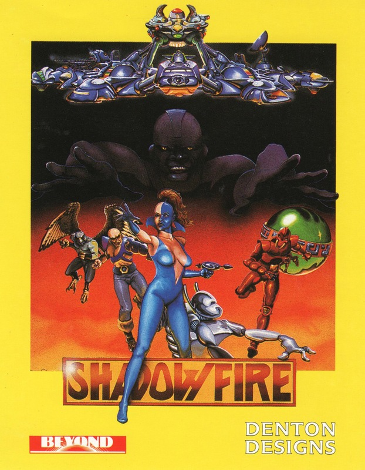
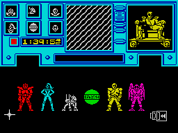
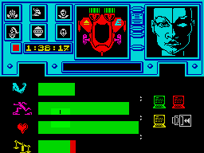

Shadowfire


{kind=link}

| Publisher: | Beyond Software |
| Price: | £9.95 |
| Year: | 1985 |
| Source: | CRASH, Issue 17 |

The distinction between adventure and arcade has definitely taken a battering recently, and Shadowfire is going to worsen the situation! Denton Designs have here devised and designed an entirely novel game which uses icons instead of text and thus brings the adventure right into the arcade player’s lap.
Shadowfire is a new kind of starship capable of jumping from planet to planet orbit, and is therefore a rather powerful weapon. The plans for this new ship are on a microdisc embedded in the spine of Ambassador Kryxix who, sadly, has been captured by General Zoff, a traitor to the Empire, and is held captive on Zoff’s ship, the Zoff5. It is only a matter of time (100 minutes in fact) before Zoff’s interrogation team discover the plans for Shadowfire which will put Zoff in a position to rule the Empire.

controlled are selected. Top left: Six
small icons indicating the present status
of the characters: white is inactive;
blue is moving; attacking is magenta;
defencing is cyan; yellow is retreating;
green is picking lock; character dying
is black.
Enigma is an organisation dedicated to the Emperor’s service, a mix of heroes, criminal scum and cybernetic engineering. They are the only people who have a chance of getting on board Zoff’s ship, rescuing Ambassador Kryxix, capturing Zoff and either taking or destroying the Zoff5. The game is played against the clock in real-time with you controlling the Enigma team.
There are six members in the team. The leader, Zark Montor is a human, Syylk is an insectoid, a ruthless fighter who has a pathological hatred for Zoff (a weakness perhaps?), Sevrina Maris is a female human with a criminal record and a specialist in picking locks — she tends to be loyal only to herself (a problem), Torik is a bird-like creature, a gun runner and freebooter — good with explosives and due to his flying abilities, the fastest mover and a good scout, Maul is a weapons droid designed to carry many different weapons systems, slow moving but well protected, and finally there is Manto, a transport droid with very little self protection capability.
Shadowfire has strong elements of strategy because handling the characters well depends very much on utilising their best strengths at the right time and minimising the effects of any weaknesses they may exhibit. Strategy also comes into the way the characters are moved about the Zoff5 once they are on board, using Torik as a scout, but remembering that he is vulnerable to attack, using Sevrina to get through locked doors and Zark or Syylk where tough action is demanded.

some difficulty with the weight of her
equipment.
The screen display is complicated — a better idea of the interrelation may be got from looking at the various screen pictures on these pages than from the written word. Basically there are five main screens, each broken up into sections. The Team screen displays a graphic of the six characters and it is here that a character to control is selected. The Status Screen displays the attributes of the selected character, with icons indicating agility (movement possible), strength, stamina and weight carried. Green bars indicate the amount of attribute. The Objects Screen allows manipulation of weapons and equipment; there are three subscreens which show objects in the same location as the selected character, a middle screen shows objects carried, and one on the right contains the icons by which the objects may be manipulated. The Movement Screen also has three subscreens, the largest contains arrows for the eight directions with filled-in arrows representing possible directions for that location. The middle screen informs you of the character’s present location, and the right contains icons for changing screen. The Battle Screen’s three subscreens show characters in the same location including friend and foe, an eight-directional compass in the middle and at the right a series of activating icons which allow attack with a selected weapon. The three attack icons command a character to do battle and if successful advance into the enemy’s location; stand fast and do battle; or retire to a safer location. Some weapons are useful when used within the same location, while others may be fired into an adjacent location — all of which calls into question the strategical role of the weapons used, forcing the player to ensure that characters are suitably armed or near a supply of interchangeable weapons.
The entire game may be joystick driven. The cursor is placed over an action icon like ‘pick up’ or ‘drop’ which is activated using the fire button, then moved to the object icon desired. All the various main screens are accompanied by a top set of three screens, the left showing the status of all six characters (see screen picture captions), the centre showing a map of the selected location, and the right showing a large picture of the selected character. An information ‘printout’ panel displays text which is of use to the player. On each screen a set of coloured monitors allow movement between the various screens (see pictures).
CRITICISM
‘Shadowfire is a very difficult game to describe or put into any category, perhaps the best thing to say is that it’s brilliant. At first the icons seem a bit daunting but after some practice they are really simple to use. The graphics are good especially those in the character screen (incidentally the graphics on the Spectrum are much clearer than those of the CBM 64). The game is quite tough to play and will take some time before it is totally mastered. What makes it extra special is the fact that each character has its own peculiar abilities so making each one play an important role in the success of your mission. Strategy, as in Lords of Midnight, is important in Shadowfire. It is best just to play a few games to familiarise yourself with the general surroundings of the ship before you seriously contemplate completing the game. Looking at the CBM 64 version and the Spectrum version I would say that the Spectrum version is superior having clearer graphics (not mucked up by too much colour like the CBM) and it is a harder game to play. Overall Shadowfire is an excellent game which will appeal to almost anyone, especially people who liked Lords of Midnight or Alien.’
‘Having six characters to control is good, because in a way it gives you six lives, yet you have to treat them as a team to succeed at all. On the other hand it also means having to take care of all six, which can be a bit involving at times, and has you dashing between characters with the joystick. There is a lot of on-screen information — very good — and the graphics are superb. Shadowfire is a complex game which will take some time to play right through, especially as it takes a while to get the hang of the icons and how to use them quickly, but I think it will have a wide appeal.’
‘When I start on a game like this, I like to know that there is a strongly worked out background, because involvement with the characters and their aims seems important. Just reading the accompanying colour instruction book is enough to let the player know that details are all worked out, present and correct. Indeed, as the game progresses (or games!), you begin to know the characters under your control quite well, each with an independent attitude to the tasks in hand. This takes Shadowfire well into the realms of strategy and role-playing. In looks, this game is simply stunning. The fluency of the graphics and the way the screens ‘iris in’ and ‘iris out’ is slick and effective. Special mention must be made of the character screens, which are wonderful, detailing each person or thing in great detail. Icon control may be new to computer games, but as a control method it must surely be here to stay, and its use, plus the game design, the characterisation, the skills required and the extraordinary graphics all add up to Shadowfire being state of the art without doubt.’
COMMENTS
| Control keys: | Up/down 2nd row/3rd row, left/right alternate bottom row, fire, any key top row |
| Joystick: | Kempston, Sinclair 2, Cursor type, Fuller |
| Keyboard play: | Simple and very responsive |
| Use of colour: | Brilliant |
| Graphics: | Stunning |
| Sound: | A bit limited |
| Screens: | An endless supply |
| Special features: | Icon driven — and the Spectrum and CBM64 versions come on one cassette |
| General Rating: | A state of the art game of the ‘modern’ sort (ie hard to define exactly), and an absolute must for any serious (or not so serious) Spectrum owner. Highly recommended. |
| Use of Computer: | 95% |
| Graphics: | 94% |
| Playability: | 92% |
| Getting Started: | 90% |
| Addictive Qualities: | 93% |
| Value For Money: | 89% |
| Overall: | 96% |